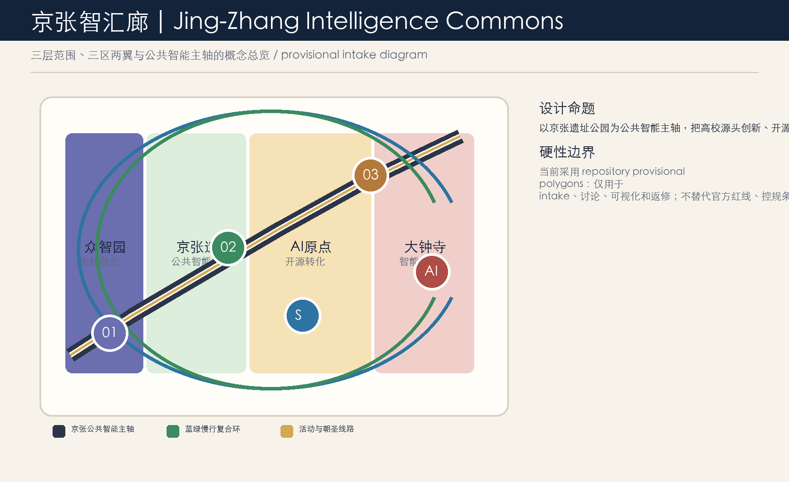
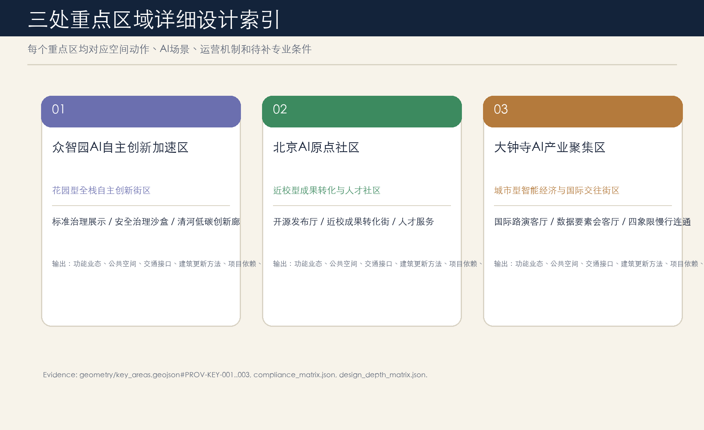
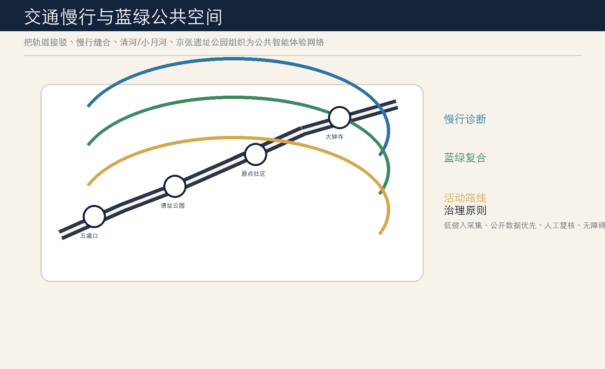
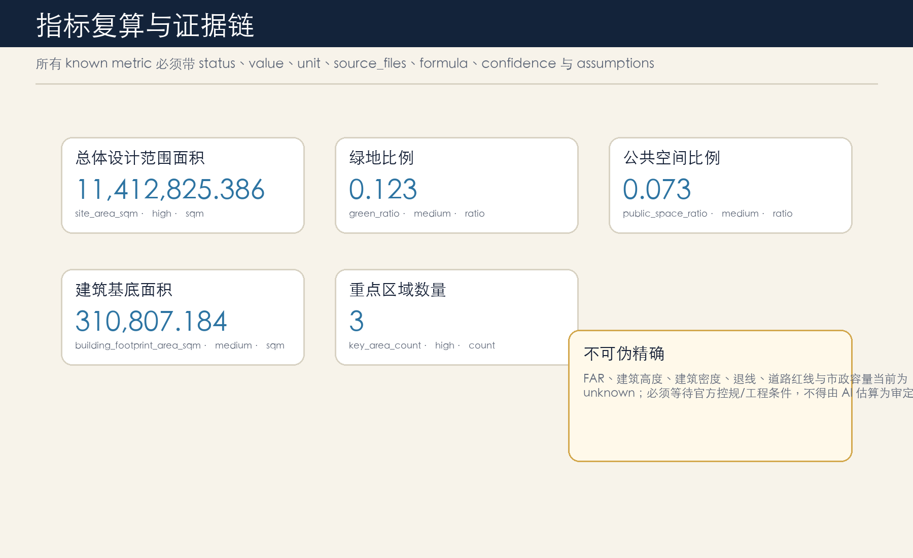

总览：一带三核、多点场景、蓝绿慢行复合环

临时边界淡化显示，不作为官方红线、控规或工程审批依据。
核心指标
site_area_sqm11,412,825
green_ratio0.123
public_space_ratio0.073
FAR、建筑高度、道路红线、市政容量等保持 unknown，等待官方资料。
设计系统
京张深蓝清河绿铜金纸色底铁路曲线开源节点三处重点区域

| 片区 | 角色 | 场景 |
|---|---|---|
| 众智园 | 全栈自主创新 | 安全治理沙盒、低碳创新廊 |
| AI原点社区 | 开源转化与人才社区 | 开源发布厅、成果转化街 |
| 大钟寺 | 城市型智能经济 | 国际路演客厅、数据要素会客厅 |
交通蓝绿

指标证据

总览地图 / 三层范围 / 用地分区 / 交通慢行 / 蓝绿公共空间 / 更新项目 / AI 场景 / 任务覆盖 / 自检状态 / 来源 / 假设
本节显式列出 visual review 要求的所有主题，并与上方图件、metrics.json、compliance_matrix.json、assumptions.json 和 sources.json 对应。
site_area_sqm11,412,825.386
green_ratio0.123423
public_space_ratio0.073281